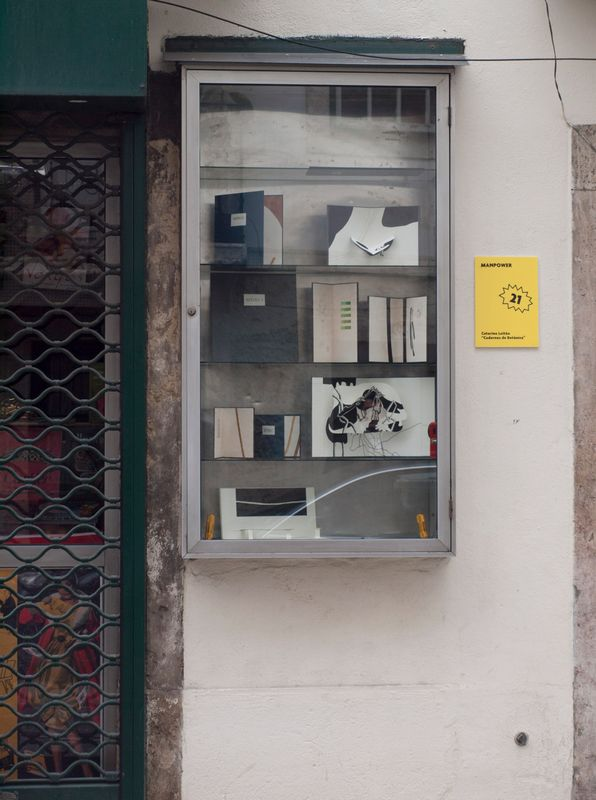

Biblioteca Natural no Festival Man Power
Biblioteca Natural was invited to participate in a street festival in Lisbon, 2014. The collection was small and at its begining. It took the window of a second hand book shop on a street of an historical neighbourhood in Lisbon.


Rua Poço dos Negros, Lisboa